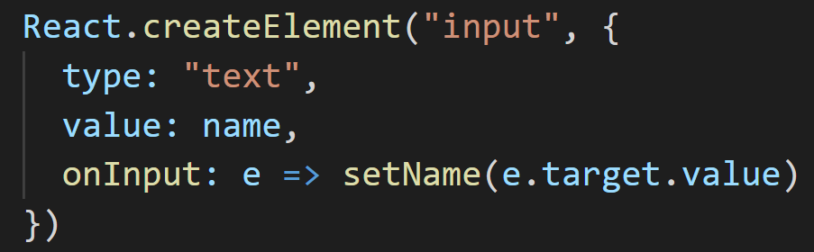
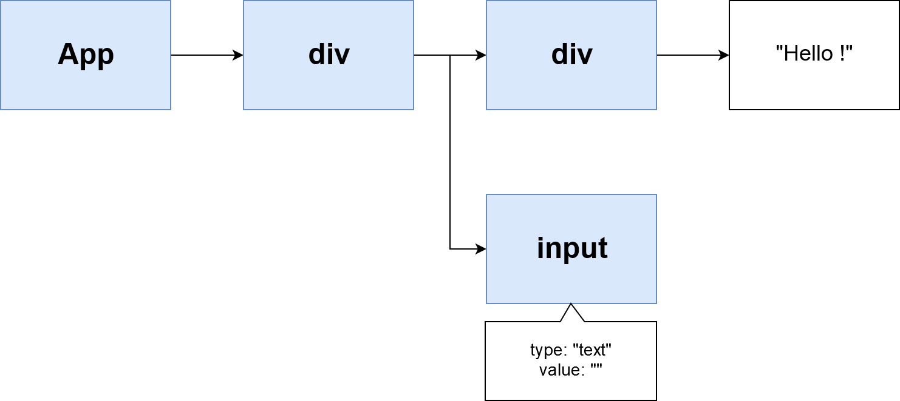
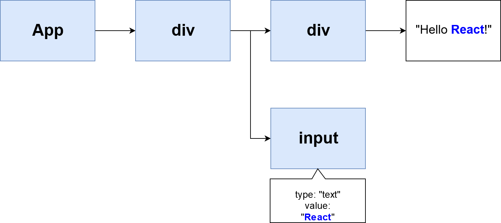

React Fiber
Reconciliation explained
Nicolas DUBIEN
Meetup React.js and React Native

⏬


⏬



Nicolas DUBIEN
 dubzzz
dubzzz
 ndubien
ndubien
Let's use our virtual DOM
Virtual DOM in action
Virtual DOM in action
3 steps rendering
Step #1: render
Construct an updated version of the Virtual DOM
Step #2: reconciliation
Check for virtual DOM changes
Step #3: commit
Batch updates
DOM updates for react-dom renderer
3 steps rendering
Render ▶️ Reconciliation ▶️ Commit
What happened on state update?
Starting from the root, React
- calls render method
- compares its output with previous virtual DOM
- updates the real DOM if needed
- moves to children
All of this in a synchronous fashion
🤔
Synchronous?
Block the main thread?
React Fiber to the rescue 🦸♀️
Why?
Smooth updates
User inputs and async results are not equal
More to come...
How?
Split rendering process
Make rendering process interruptible
Make the browser call us when it has some spare time
Plug updates in requestIdleCallback for low priority
updates
The window.requestIdleCallback() method queues a
function to be called during a browser's idle periods. This enables
developers to perform background and low priority work on the main
event loop, without impacting latency-critical events such as
animation and input response. Functions are generally called in
first-in-first-out order; however, callbacks which have a timeout
specified may be called out-of-order if necessary in order to run
them before the timeout elapses.
The callback function is passed an IdleDeadline object describing the amount of time available
Source: developer.mozilla.org
3 steps rendering
Render ▶️ Reconciliation ▶️ Commit
Problem?
Iteration is recursive
Not all tasks can be interrupted
Solution?
Render ▶️ Reconciliation -
during requestIdleCallback
Commit - block the main thread
Let's do it


Fiber


Code


Future steps
Concurrent Mode
Parallel (Worker)
Questions?
 dubzzz
ndubien
dubzzz
ndubien